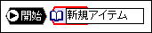
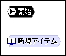
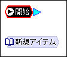
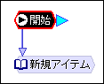

チュートリアル

チャートの中に「開始」と書かれた箱がありますが、この箱のことをノード呼びます。ノードは実行の最小単位で、ノードから別のノードに移動や分岐することができます。また、ノードには、シナリオノードや計算ノードといった機能別に種類があります。
ゲームがスタートすると、まずこの開始ノードが実行されますが、開始ノードには何も機能がないので、シナリオノードを作ってそちらにジャンプさせます。シナリオノードは、文章や画像を表示したりサウンドを鳴らす、といったゲームのメイン部分を記述するためのノードです。
では、「チャート」メニューの『「シナリオ」追加』を選択してください。
「新規アイテム」というノードができます。名前は変えても変えなくても、どちらでも構いません。
では、ドラッグして適当な位置までずらしてください。
それでは、開始ノードからこの「新規アイテム」に移動するように設定します。
開始ノードを選択すると、右のように水色の三角形が表示されます。この三角形をドラッグして、マウスを動かしてみてください。矢印が表示されたでしょうか？この矢印が移動先を表しているので、これを「新規アイテム」の上でまで持っていきマウスのボタンを離してください。
左のように開始ノードから「新規アイテム」に矢印が伸びていれば成功です。